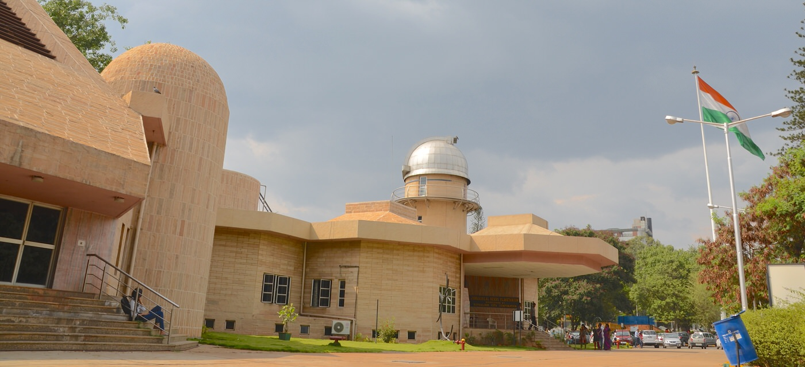

Jawaharlal Nehru Planetarium
Science Museums
Jawaharlal Nehru Planetarium in Bangalore is a popular attraction in the city that is administered by the Bangalore Association for Science Education (BASE). The entire establishment is meant for science enthusiasts with an aim to impart knowledge of the aspects of earth and space in a fun and exciting way.
Timings : 10:00 AM - 5:30 PM (closed on Mondays, second Tuesdays, local and national holidays)
Entry Fee : Adults: INR 60
School students/Children (up to 16 years): INR 35
(Children below 3 years is not allowed into the Sky Theatre)